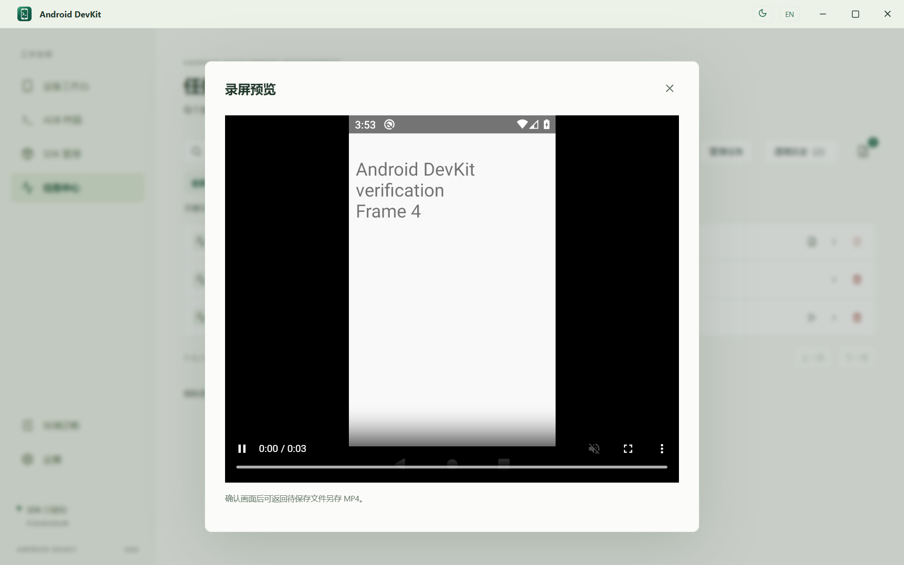
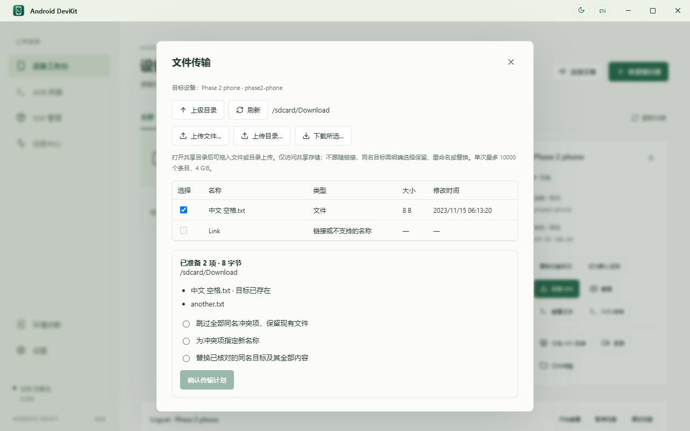

二期实施与验收报告
分包 APK 安装 → 录屏 → 文件传输，三条开发主线已实现。
已完成本地构建、Rust 回归、隔离模拟器主流程、提交点中断恢复及桌面 WebView 验证。实体手机验收仍待执行，不能以模拟器或桌面测试代签。范围基线见 二期范围。
已完成本地构建、Rust 回归、隔离模拟器主流程、提交点中断恢复及桌面 WebView 验证。实体手机验收仍待执行，不能以模拟器或桌面测试代签。范围基线见 二期范围。
1. 已交付能力
| 范围 | 当前实现 | 结果与限制 |
|---|---|---|
| P2-01 / 02 分包安装 | 多选 APK / 导入目录；不可变暂存与摘要；包名、versionCode、签名证书、base、重复 split、依赖与 API / ABI 校验；一次 install-multiple -r 任务，安装后复查版本与完整 split 集合。 | 默认保留应用数据，不自动卸载或降级；依赖使用现有 Build-Tools / Java 计划与许可确认。AAB、APKS、APKM、XAPK 容器不在本期。 |
| P2-03 / 04 录屏 | 默认 30 秒，1–180 秒；静音 MP4，原始 / 最长边 1280 的降分辨率；状态、时长、停止；只向核验 PID 与输出路径的本任务进程发停止信号。 | 完整取回、MP4 索引与视频采样、大小及可用的 SHA-256 校验后才清理设备原件；待保存文件可播放、另存、清理。应用强退后可手动取回原视频，不重新录制。内嵌预览上限 64 MiB，大于此值另存后播放。 |
| P2-05 / 06 文件传输 | Download / Pictures / Movies / DCIM 浏览、上级、刷新、名称 / 类型 / 大小 / 时间、多选、拖入上传；多文件 / 多目录、任务队列、按验证字节更新进度与取消。 | 只访问允许的共享存储，不跟随链接或绕过私有目录。单次至多 256 个顶层项目、10000 个条目、4 GiB；Windows 不支持的文件名与大小写冲突明确拒绝。 |
| 冲突与恢复 | 同名目标必须明确选择保留、重命名或替换；发布前复核内容指纹。整棵目录按根替换，不合并。原件备份保留到全部发布完成，中断可恢复被替换目标。 | 外部修改时拒绝覆盖；带原件备份的暂存不能被普通清理删除；原件尚未处理的任务记录也不能删除，保留恢复入口。设备无摘要能力时报告仅校验大小；无法核对旧目标摘要时拒绝替换，仍可保留或重命名。 |
| P2-07 统一任务 | 冻结 serial / transport / ADB 代次；requestId 幂等；同设备资源串行；未知结果标为待检查；重连不自动转投或重放。 | 文件中断后重新选择清单；录屏中断后取回原件。任务保留已发布项目、暂存位置、备份归属与错误详情。 |
2. 自动验证结果
| 检查 | 实际证据 | 状态 |
|---|---|---|
| 构建 / 静态检查 | TypeScript + Vite、Clippy 全目标 -D warnings、Rust 格式、版本一致性、生成 IPC 契约、Git whitespace 检查。 | 通过 |
| 默认 Rust 回归 | 126 通过，14 项显式忽略；本次新增的真实 SDK 测试另行运行。包含 API / ABI、缺 base / 重复 / 缺依赖、精确 split 核对、路径边界、源文件变化、无帧 / 截断 MP4、目标冲突、原件恢复与外部修改保护。 | 通过 |
| 界面夹具 | 10 组生产前端回归；新增分包输入、录屏边界、文件导航 / 多选 / 链接拦截、三种冲突选择、拖入、重连、中文 / 英文与 480 / 1280 宽度。 | 通过 |
| 实际 SDK · M1 | 两台隔离 API 29 x86_64 模拟器同时在线；base + config.zh 安装；v1 → v2 覆盖升级并读取原应用数据；不同包 / 版本 / 证书、无签名、缺 base / 依赖拒绝；降级和签名冲突后原数据保留。 | 通过 |
| 实际 SDK · M2 | 短录屏、提前停止、180 秒上限、降分辨率；强杀应用测试进程后，原录屏继续完成并被取回。ffprobe 确认 H.264 视频、非零帧、时长与无音轨；实际播放器由桌面 WebView 解码回放。 | 通过 |
| 实际 SDK · M3 | 中文 / 空格 / 引号 / 特殊字符、空文件、隐藏文件与空目录往返，SHA-256 一致；混合错误目标不写第二台设备；源暂存被篡改时拒绝发布。 | 通过 |
| 提交点强杀 | 上传和下载分别在旧目标已备份、尚未发布时强杀工作进程；重开保持待检查，普通清理拒绝删备份，恢复后旧内容摘要一致。另有录屏工作进程强杀与取回。最后的独立专项再次强杀上传 / 下载进程，并故意移除保护标记，仍拒绝清理实际原件备份且恢复摘要一致；未处理原件的任务记录禁止删除。 | 主流程 3 次强杀通过；保护专项另 2 次通过 |
| 真实桌面 IPC | 独立 application identifier、独立中文数据目录；实际权限、分包安装、内嵌视频播放、中文隐藏文件往返、重命名 / 替换、重复 requestId、取消、暂存清理、视频缓存清理；pageerror 为空。 | 通过 |
| 一期故障专项 | 原 35 场景及 14 次提交点强杀回归；不扩大到此前暂缓的全量设备 / 系统矩阵。 | 通过 |
实际媒体时长以设备产生的时间戳为准，编码封口存在调度余量；180 秒测试的媒体约 180.72 秒。测试画面每 500 毫秒变化，避免静止模拟器只生成少量帧；产品会拒绝无有效采样或不完整的 MP4。Windows ADB 中文父目录写入兼容、空目录丢失与旧版 mv 参数兼容问题已在本轮修复并回归。
结构化证据：隔离 SDK 与强杀恢复、桌面 IPC / 媒体与文件。具体运行日志与缓存位于本机 .qa/runtime/phase2-1792854507、.qa/phase2-ui；最终保护专项位于 .qa/runtime/phase2-recovery-1792858902。
3. 必须实体手机验收的工作
以下均为待验，尚未计为通过。本轮仅使用专用模拟器；未对用户手机执行安装、录屏或文件写入。至少登记一台支持无线调试的 Android 11+ 手机，记录型号、系统、ADB 版本、连接方式、验收人和证据。
| 编号 | 验收工作 | 通过条件 | 状态 |
|---|---|---|---|
| P2-H01 | USB 与无线下分包安装 / 覆盖升级 | 安装隔离样例应用，核对 versionCode / split 与数据保留；记录授权提示、ABI 与厂商安装限制，失败不卸载旧应用。 | 待验 |
| P2-H02 | 手机录屏与外部回放 | 10 秒 / 180 秒 / 提前停止；原始与降分辨率；另存后普通播放器回放，画面 / 方向与无音频符合预期。单独检查锁屏、旋转、DRM / 受保护画面及编码器失败反馈。 | 待验 |
| P2-H03 | 手机共享存储往返与权限 | 中文、空格、文件 / 目录、空文件 / 空目录；保留、重命名、替换三种分支；USB / 无线断连与重连；验证受限路径有明确错误、其他文件和视频不被清理。 | 待验 |
4. 桌面交付待验与保留边界
- Windows 系统文件 / 多目录选择与“另存 MP4”原生对话框需做人工交互验收；本轮桌面自动化直接提供 QA 路径，实际复制、摘要、缓存与恢复逻辑已验证。
- 下一次安装版 / 便携版正式构建后复核三项入口与中文 / 英文窄屏操作；本轮没有发布新版本或移动 v0.4.0 标签。
- 一期已暂缓的干净系统、完整硬件 / 品牌 / 混合 DPI、长时压力与 Authenticode 矩阵继续留在 一期 TODO，本轮不恢复其实施范围。
- 不支持容器 APK 导入、音频 / 投屏 / 长录屏、root / 私有数据、断点续传 / 同步与跨设备批量操作；保留既定二期排除项。
5. 复验入口
pnpm.cmd check pnpm.cmd test pnpm.cmd build $env:PLAYWRIGHT_CHANNEL='chromium' pnpm.cmd test:ui-fixtures pnpm.cmd verify:faults pnpm.cmd verify:phase2 pnpm.cmd verify:phase2-recovery
verify:phase2 使用既有 E:\Android\sdk、Android Studio JBR、Build-Tools 35、API 29 platform 与 default x86_64 镜像，仅在 .qa/runtime 创建和删除自己的两台 AVD。verify:phase2-recovery 单独创建一台专用 AVD，复验原件备份保护与恢复后删除它。桌面验证脚本 scripts/check-phone-native.cjs 仅接受单独 QA 实例的元数据，禁止连接用户正式实例。
6. 界面与实现依据
真实桌面 MP4 回放：

文件浏览与冲突确认：

底层行为参考 Android 官方 ADB 文档、apksigner 官方文档；视频索引校验参考 AOSP MP4 提取器。最终实机验收以第 3 节登记结果为准。